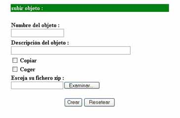

3.15.1 Subir Objeto
Para poder crear una Thing de tipo object deberemos clicar sobre el icono  que podemos encontrar en la pantalla donde aparece el entorno 3D del Place,
justo debajo del logotipo de MOVE!. Aparecer� entonces una ventana como la siguiente:
que podemos encontrar en la pantalla donde aparece el entorno 3D del Place,
justo debajo del logotipo de MOVE!. Aparecer� entonces una ventana como la siguiente:

Para poder crear la Thing tendremos que rellenar los siguientes campos,
- Nombre del objeto: nombre para nuestro objeto
- Descripci�n del objeto: descripci�n del objeto
- Copiar: permite obtener copias de este objeto
- Coger: permite coger el objeto y llevarlo a cualquier sitio del entorno 3D del Place
Una vez finalizada la fase de introducci�n de datos en el peque�o formulario deberemos pulsar el bot�n  para
que la nueva Thing sea creada y subida al servidor de MOVE!.
para
que la nueva Thing sea creada y subida al servidor de MOVE!.
Si ha ido todo bien la ventana se cerrar� y veremos como dentro del Place donde nos encontramos aparece el nuevo objeto 3D.